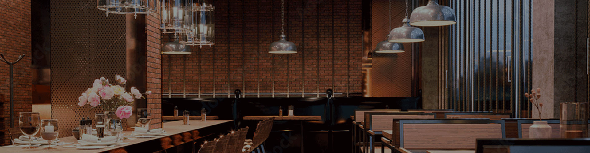

MY NO.1
MY NO.1
STEAK HOUSE VIPS
빕스만의 특별한 스테이크를 맛볼수 있는
My No.1 스테이크 하우스
빕스만의 특별한 스테이크를 맛볼수 있는
My No.1 스테이크 하우스
빕스는 외국에 로열티를 지불하지 않는 정통 스테이크 하우스로 1997년 1호점인 등촌점을 오픈한 이래 고객님의 기대, 그 이상의 행복한 경험을 위해 항상 노력하고 있습니다.
늘 신선하고 새로운 맛, 활력이 넘치는 즐거운 공간, 세심한 배려와 진심이 담긴 서비스로 My NO.1스테이크하우스로 우뚝 선 빕스는 국내는 물로 세계에서도 인정받는 빕스가 될수 있도록 노력할 것입니다.
빕스의 스테이크 변천사를 보면 한국인의 스테이크 선호도를 알 수 있다고 할만큼 빕스는 다양한 부위, 조리법, 숙성,소스등을 이용한 다채로운 스테이크를 선보였습니다.
2010년 말 빕스는 프리미엄 스테이크 하우스로 변신을 선포하고자 고객님들의 입맛을 부응하기 위해 세계 각국의 스테이크 전문점을 탐방하여 정통 스테이크의 맛을 구현하려 노력하였으며, 브로알링, 팬프라잉 등 다양한 조리법과 숙성방법을 개발해왔습니다.
빕스는 97년 런칭 당시 부터 "샐러드바"라는 새로운 Frame을 도입, 빕스만의 차별화된 포인트로 건강과 웰빙 컨셉의 메뉴들을 한발 앞서 고객님들에게 제시했습니다.
또한 연어,새우 등 일반 레스토랑에서 만나기 어려운 고급 메뉴들을 선보이며 고객님들의 사랑을 받아왔습니다. 빕스의 샐러드 바는 지금도 새로운 변화를 시도하며 진화하고 있습니다.